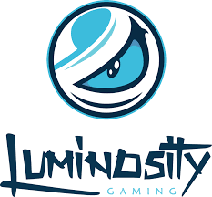
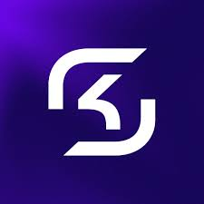
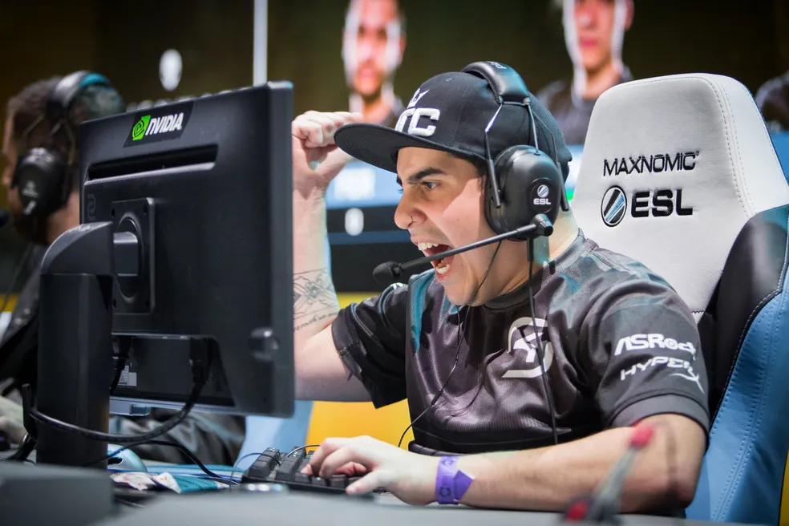

O Brasil está cravado na história dos Majors de Counter-Strike: Global Offensive (CS:GO). O quinteto liderado por Gabriel “FalleN” fez história em 2016 ao conquistar um bicampeonato mundial com as tags da Luminosity Gaming e SK Gaming.
 
Marcelo "coldzera" David foi eleito o melhor jogador entre os anos de 2016/2017
